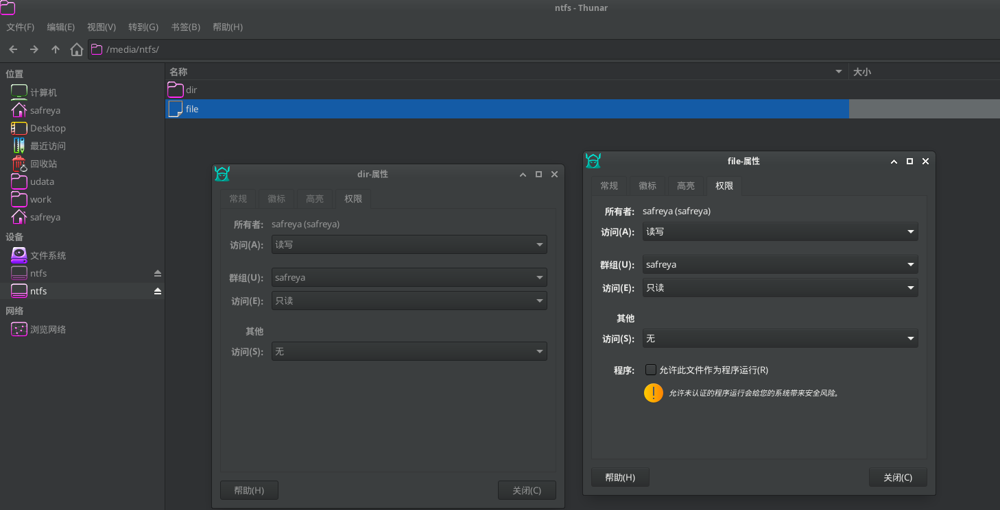

自动挂载
Table of Contents
FreeBSD 提供多种自动挂载方式
automount 自动挂载
automount 对普通用户的权限控制能力有限，主要以 root 身份执行挂载操作 如果需要更精细的权限控制机制，建议使用 DSBMD
automount 已内置于 FreeBSD 基本系统，会自动监控设备插入事件并执行挂载操作，默认挂载点位于 /media 目录。 /etc/auto_master 文件控制着 automount 的行为，查看该文件：
# # Automounter master map, see auto_master(5) for details. # /net -hosts -nobrowse,nosuid,intr #/media -media -nosuid,noatime,autoro #/- -noauto
文件说明：
- -hosts: 查询远程 NFS 服务器并映射其导出的共享
- -media: 查询尚未挂载但包含有效文件系统的设备。通常用于访问可移动媒体上的文件
- -noauto: 按照在 fstab(5) 中配置为 noauto 的文件系统进行挂载
- -null: 禁止 automountd(8) 挂载任何内容
为自动挂载可移动媒体，需将文件 /etc/auto_master 中 /media 行首的注释符号移除，如下：
/media -media -nosuid,noatime
然后，将以下内容添加到设备状态监测进程文件 /etc/devd.conf 中：
notify 100 {
match "system" "GEOM";
match "subsystem" "DEV";
action "/usr/sbin/automount -c";
};
不应添加到注释符号 /* */ 之间
通过将以下行添加到 /etc/rc.conf 文件中，可使 autofs(4) 在系统启动时自动运行：
autofs_enable="YES"
每个可以自动挂载的文件系统都会作为 media 下的一个目录出现。该目录的名称是文件系统标签。如果标签缺失，目录名称将以设备节点命名。查看挂载文件：
$ ls /media/da0p1/ SpaceSniffer.exe
文件系统会在首次访问时自动挂载，并在一段时间的非活动后自动卸载。也可以手动卸载自动挂载的设备：
$ automount -fu
中文乱码
在 /etc/auto_master 中 /media 行末尾追加 -L=zh_CN.UTF-8
注意 -L=zh_CN.UTF-8 是 mount_msdosfs(8) 的专有参数，而其他文件系统的挂载程序并不识别该参数，将导致其他设备无法挂载
DSBMD 自动挂载
DSBMD（Desktop Scriptable Block Device Manager Daemon）是 FreeBSD 的介质和文件系统类型检测守护进程 采用客户端-服务器架构设计，允许客户端以受控方式挂载存储设备。其默认配置即可自动检测并挂载可移动介质
安装DSBMD
DSBMD 系统包含守护进程和客户端两部分，可通过以下方式安装：
使用 pkg 包管理器安装:
$ pkg install dsbmd # DSBMD 守护进程 $ pkg install dsbmc-cli # DSBMC 命令行客户端 $ pkg install dsbmc # DSBMC Qt 图形界面客户端
使用 Ports 系统编译安装:
$ cd /usr/ports/filesystems/dsbmd/ && make install clean # 编译并安装 dsbmd 守护进程 $ cd /usr/ports/filesystems/dsbmc-cli/ && make install clean # 编译并安装 dsbmc 命令行客户端 $ cd /usr/ports/filesystems/dsbmc/ && make install clean # 编译并安装 dsbmc Qt 图形界面客户端
客户端可根据实际需求选择安装其中之一。在桌面环境下，推荐使用 dsbmc 图形界面客户端以提升操作便捷性
配置 DSBMD
DSBMD 系统分为守护进程和客户端两个组成部分 客户端向 DSBMD 发起挂载、卸载或弹出介质的请求，也可设置 CD/DVD 的读取速率 守护进程负责接收并执行这些请求 守护进程作为系统特权进程拥有执行所有操作的权限，而客户端作为普通用户进程受限于系统权限设置 权限不足的用户，其挂载请求由守护进程依据配置文件中的用户和组设定验证后决定是否允许执行
守护进程配置文件路径为 /usr/local/etc/dsbmd.conf :
- 默认情况下，属于 wheel 和 operator 用户组的成员被允许挂载设备
- 如果需要授权其他用户挂载权限，可修改配置文件中的相关配置项
启用守护进程需执行以下命令：
$ service dsbmd enable # 设置 dsbmd 守护进程开机自启 $ service dsbmd start # 启动 dsbmd 守护进程
守护进程配置详解
默认配置通常可满足基本使用需求；如需更细致地控制挂载，则需修改守护进程的配置文件，其路径为 /usr/local/etc/dsbmd.conf
usermount 配置项说明
usermount 配置项控制是否允许以普通用户身份挂载设备：
# usermount - Controls whether DSBMD mounts devices as user. This requires the # sysctl variable vfs.usermount is set to 1. usermount = true
配置文件默认启用了 usermount 选项，但要使其生效，还需在系统内核参数中启用 vfs.usermount ，可在 /etc/sysctl.conf 文件中添加以下内容：
vfs.usermount=1
- 启用 usermount 时，挂载程序将以普通用户身份执行；未启用 usermount 时，挂载程序以 root 特权用户身份执行
- 无论是否启用 usermount，挂载点的属主均为发起请求的客户端用户
允许自动挂载的用户授权
在默认情况下，允许 operator 和 wheel 用户组的成员连接：
# allow_users - Comma separated list of users who are allowed to connect. # allow_users = jondoe, janedoe # allow_groups - Comma separated list of groups whose members are allowed # to connect. allow_groups = operator, wheel
通过修改 allow_users 和 allow_groups 配置项，可以管理自动挂载功能的授权用户
修改挂载点及其下文件目录访问权限（以 NTFS 为例）
以挂载 NTFS 文件系统为例，可以修改文件访问权限为 640 rw-r----- ，目录访问权限为 750 rwxr-x---
# …………以上配置内容省略………… ntfs_mount_cmd = "/usr/local/bin/ntfs-3g -o \"uid=${DSBMD_UID},gid=${DSBMD_GID}\" ${DSBMD_DEVICE} \"${DSBMD_MNTPT}\"" # …………中间配置内容省略………… ntfs_mount_cmd_usr = "/sbin/mount_fusefs auto \"${DSBMD_MNTPT}\" ntfs-3g ${DSBMD_DEVICE} \"${DSBMD_MNTPT}\"" # …………以下配置内容省略…………
NTFS 的挂载配置包含两种命令形式：
- 启用 usermount 时使用 ntfs_mount_cmd_usr
- 否则使用 ntfs_mount_cmd
# …………以上配置内容省略………… # 使用 ntfs-3g 挂载 NTFS 文件系统，设置挂载后文件权限掩码 fmask=137、目录权限掩码 dmask=027，并指定属主 UID 与 GID ntfs_mount_cmd = "/usr/local/bin/ntfs-3g -o \"uid=${DSBMD_UID},gid=${DSBMD_GID},fmask=137,dmask=027\" ${DSBMD_DEVICE} \"${DSBMD_MNTPT}\"" # …………中间配置内容省略………… # 使用 mount_fusefs 以普通用户方式挂载 NTFS 文件系统，设置文件和目录权限掩码 fmask=137、dmask=027 ntfs_mount_cmd_usr = "/sbin/mount_fusefs auto \"${DSBMD_MNTPT}\" ntfs-3g -o fmask=137,dmask=027 ${DSBMD_DEVICE} \"${DSBMD_MNTPT}\"" # …………以下配置内容省略…………
此处为 ntfs-3g 指定了挂载选项中的文件权限掩码 fmask=137 和目录权限掩码 dmask=027 用于控制挂载后文件和目录的权限设置

文件结构
/
├── usr
│ ├── local
│ │ └── etc
│ │ └── dsbmd.conf # DSBMD 守护进程配置文件
│ └── ports
│ └── filesystems
│ ├── automount # automount Port 目录
│ ├── dsbmd # DSBMD 守护进程 Port 目录
│ ├── dsbmc-cli # DSBMC 命令行客户端 Port 目录
│ └── dsbmc # DSBMC Qt 图形界面客户端 Port 目录
├── etc
│ └── sysctl.conf # 系统内核参数配置文件
├── media # 默认挂载点目录
└── home
└── ykla
├── .xinitrc # X 初始化配置文件
└── .xprofile # X 会话配置文件
| Next: Linux 文件系统 | Previous: UFS文件系统 | Home: 存储管理 |